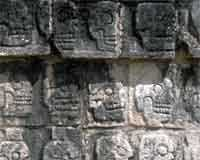

|
|
祷告： 「天父，我们感谢你，我们不是我们自己的，我们是你的，是用你的宝血买赎回来的，因为你把我们买赎回来，所以你有主权用我们，使我们一生一世是在你的手中，在你的旨意中间照着你的心要我们做什么。主啊，求你赐下顺从；求你使我们甘心顺从，使我们甘心背十字架顺从；使我们在你的引导之下顺从；我们除了顺从你之外，我们一无所有。主啊，求主赐福，使我们以后的日子比以前的日子更在你手中合你使用。主啊，你听我们的祷告，我们把以下的时间交托给你，奉主耶稣基督的圣名求的。阿们。」
|
我们一同的来看一段的圣经： 彼得前书第一章，我们要从第十节念到第十二节，我念一遍，以后的 开声一同来念一遍。
「论到这救恩，那预先说你们要得恩典的众先知，早已详细的寻求考察；就是考察在他们心里基督的灵，预先证明基督受苦难，后来得荣耀，是指着什么时候，并怎样的时候。他们得了启示，知道他们所传讲的一切事，不是为自己，乃是为你们；那靠着从天上差来的圣灵，传福音给你们的人，现在将这些事报给你们；天使也愿意详细察看这些事。」
我们一同来念：「论到这救恩，那预先说你们要得恩典的众先知，早已详细的寻求考察；就是考察在他们心里基督的灵，预先证明基督受苦难，后来得荣耀，是指着什么时候，并怎样的时候。他们得了启示，知道他们所传
讲的一切事，不是为自己，乃是为你们；那靠着从天上差来的圣灵， 传福音给你们的人，现在将这些事报给你们；天使也愿意详细察看这些事。」
如果我们有时间好好在这一段圣经里面思考，你会得到许许多多很宝贵、很不寻常的特殊的亮光。因为在这一段圣经里面给我们看见了从旧约到新约、从人、先知的范围直到灵界的天使都在察看一件很特别的事情，那就是福音的奥秘。
在这段的圣经里面给我们看见，先知们察看，他们凭着什么去了解？ 他们凭着什么去详细考察？他们考察的时候，是在福音的历史行动
还 没有展示之前；他们考察的时候，是基督没有道成肉身之前，他们已 经详细考察；结果他们发现这一件历史事件，一定要产生。这个历史
事件的产生成为历史事实，做证我们所传的福音，是神在历史上的行 动的一个记号。这样，我们看见在历史中间，在某一个时候，在怎样
的时候，就成全了神心中所定的那个最好的美意，就是救赎人福音的 大工。这样，先知们考察在那他们心中基督的灵，他们就得了启示，
所以这里给我们看见，这福音是神永世的计划，在历史中间的展示； 神永世的计划在历史的过程中间显明出来，The
Gospel is based on the special action of God's intervention
in historical facts. 这些历史的事实是神在时空里面对人关怀的最高峰的一个表 示。所以在这个时间与空间的中间，神自己来做人，表示�k与被造者
之间的关系。�k不但创造了人，按照自己的形像造了人，�k自己来到 人的中间，披戴了人犯罪了以后罪身的形像，虽然�k没有犯罪。�k以罪身的形像，
以奴仆的形像来到人类的中间（参： 罗马书：8 章 3 节），与人活在一起；在时候满足的时候，道成肉身（参：加拉太书
：4 章 4 节）。 在时候满足的时候，�k得胜了试探，在时候满足的时候，他代替我们受死；在时间满足的时候，他领受了神的审判；在
时候满足的时候，他被埋葬；在时候满足的时候，�k从死里复活。这 些事， these events 这些的历史事件，就是永世人与神和好的根基；这一个基督的顺从的生活，也就成为永世中间每时每代事奉主的人最高的模范。耶稣基督在历史上的这些事件成全了神在永恒的中间
救赎的计划所定的那个心意，�k的心意中间所安排的一切，在�k的生 命里面具体的显明出来了。我们看见这样呢，对这一位基督和这个时
刻所完成的一切，不但是人界里面的一个很重要的事情，连天使也详 细考察。我很喜欢这句话语 ---- 连天使也详细考察。对天使来说，
基督降生，基督道成肉身，基督肯为人死，基督从死里复活，是一件百 思莫解的事情，所以基督把神的爱向世人显明的时候，对世人来说
是最大的惊喜，对天使来说，是最大的惊奇，对撒但来说，是最大的 惊惶。
灵界里面撒但看见基督道成肉身，他知道这样没有办法再控制人和人 性，因为基督的救赎要把属于神的人从他的手中拯救出来。所以，「
你要给他起名叫作耶稣，因为他要将自己的百姓从罪恶中间拯救出来 」（参：马太福音：1
章 21 节）。这叫作「救恩」，这个叫作「福 音」。把罪恶中拯救出来的这些人归向上帝，这是基督福音大 工所要成全的。我们看见天使对这件事详细考察。为什么天使详细考
察呢？因为他奇怪，为什么他的同僚犯罪没有得救的机会？同为天使 犯罪，没有救赎的可能，但是比天使更低的受造者 ----
人犯罪，有 救赎的可能，这是他最大的惊奇。这个惊奇就产生了两个可能，顺从 的天使就把荣耀归给上帝（参：路加福音：2
章 14 节），不顺从的 天使就变成控告人在神面前的毁谤者（参：启示录： 12 章 10 节）。
在灵界里面我们看见，人的灵在永世中间无限的惊喜，感谢，感谢上 帝，赞美你！因为你把我从罪恶中间救赎出来了。无限的惊奇，在天
使中间连这些比我们更低一点的受造者都有可能被救赎，为什么神要 救赎他们呢？太奇妙了！所以好的天使当地上有一个人得救的时候，
就与千万的天使一同欢喜快乐（参：路加福音： 15 章 7-10 节）。 但是在撒但面前，那些悖逆的，抵挡的天使，在灵界中间，因为你得
救，因为你归向基督，他用各样的办法要来抵挡你，要在神面前控告 你。这是我们在圣经里面看见的 the cosmic drama;
the spiritual drama 宇宙之间的大的剧，一个宇宙之间的很可怕的事情，就是神怎 样拯救人，以致于�k得着最高的荣耀，因为我们是不配的。这是很奇妙
的。所以我们感到不太奇怪，为什么耶稣降生的时候，天使有分呢？ 耶稣受试探的时候天使有分呢？耶稣基督在客西马尼园的时候天使有
分呢？耶稣基督在十字架上的时候天使有分呢？耶稣基督被埋葬的时 候天使有分呢？耶稣复活的时候天使有分呢？耶稣升天的时候天使有
分呢？耶稣再来的时候天使有分呢？
你注意到吗？你说「圣经什么地方说，耶稣基督在十字架的时候与天 使有分？」当耶稣生出来的时候，天使有没有分啊？「我报给你们大
喜的信息，是我的朋友嫉妒得半死的，对你们是很可喜的。那些又惊 又喜又怕，你不要害怕，fear
not，因为今天在大卫的城你为你预备 了一位救主。 」（参：路加福音：2 章 10-11 节）这是历史事实， 上帝造了一件很奇妙的新事，就是借着童贞女把神的儿子降生在世界
上来。大喜的信息。耶稣降生的时候天使有分，耶稣受试探的时候， 天使有没有分啊？有。 在旷野中间天使与他同在（参：马太福音：4
章 11 节；马可福音：1 章 13 节）。耶稣在受试探的园地中间和亚 当在受试探的伊甸园中间有绝对不同的环境，但是有相当令人思考的
相同点，就是人性 怎样可以得胜，人性怎样才失败。亚当是人类的第 一个代表，基督是人类的第二个代表；所以亚当是首先的人亚当，基
督是末后的亚当（参：哥林多前书：15 章 45 节）； 亚当怎么样在 伊甸园里面抵挡神，耶稣在试探和在客西马尼两个很特殊的地点中间
怎样顺服神，变成一个人类的两个代表性遥遥相对的对照。所以耶稣 受试探的时候，天使有分；是试探完了以后天使出现了，加力量给他
（参：路加福音：22 章）。 亚当受试探完了以后天使出现来抵挡他 ，不准他再回伊甸园（参：创世记：3 章 24 节）。耶稣在客西马尼
园的时候，天使有分吗？有分。在十字架上的时候，天使有分吗？有 分的。耶稣说，「你岂不知有十二营的天使正在等候我」（参：马太
福音：26 章 53 节），只要耶稣发一个命令， 那些人都要受审判。 但是基督勒住他自己，他不用他的主权随便行事，免得神的旨意受了
拦阻，他不用那个特权。耶稣死的时候在坟墓天使看守（参：马可福 音：16 章 5 节），耶稣基督复活的时候天使讲了最伟大的一句话，
「你们为什么在死人中间找活人呢？」（参：路加福音：24 章 5 节 ）这句话照我个人的体会，乃是超越所有宗教救赎性
的凯旋。
|
你找孔子吗？他在坟墓里面。你找释迦牟尼吗？他在坟墓里面。你找穆罕默德吗？他在坟墓里面。你找苏格拉底吗？他在坟墓里面。你找所有世界宗教的创立人吗？他们都在坟墓里面。在坟墓里面你找谁呢？你为什么在死人中找活人？基督不是属于坟墓的范围，基督是从死里复活，胜过掌死权的那一位独一的生命的主宰。这是福音。阿们？「你们为什么在死人中间找活人呢？」这两位天使发出大光对他们产生一个令人深省的超越宗教性的救赎真理。
|

|
今天基督教的叛逆者；今天那些出卖信仰的人，试试看等量齐观把基督教和其它的宗教当作一 样。今天那些不忠于圣经的人，以为神也可以借着别的宗教启示�k自
己，所以就把基督的独特性 ，基督教福音的绝对性把它相对化，妥协 于综合主义，妥协于量的比较中间。我很注意年青的一代有谁可以接
替这福音的工作？我发现有一些人大有知识，大有学问。但是他们对 福音本质的超越性 ，福音本质的绝对性没有坚持，所以我为他们很担
忧下一代的福音会变质。我是不是在你们中间说「这个宗教很好，那 个宗教很好，但是耶稣比这些高一点」？如果我把所有的宗教当作同
等，然后借着基督的量高过其它的宗教来把基督的夸耀性 向你们显明 出来，我不是神的仆人。我要告诉你，在基督与所有宗教之间的差别
不是量别，而是质别。 That is qualitative difference, between Christ and other religions
量别不是质别， 质别不是量别，量别与质别之间有别； 那别是这别。 Quailitative difference is
not quantitative difference, quantitative difference is not
qualitative difference. The qualitative difference and quantitative
difference must be different. And difference between the qualitative
difference and quantitative difference is qualitative difference.
因为这是 一个质别，所以无法相比。我们如果在别的宗教中间找到一点良善， 那不过是普遍启示中间所得到的一个内在的宗教性的反应而已。但是
我们在基督里面看到的不是「善」、「恶」的问题，是「生」、「死 」的问题。上帝爱世人，甚至将他的独生子赐给他们，叫一切信他，
不致邪恶，变成良善？不是的，那是善恶树的道路，就在善恶树的道路中间人失败了，神赐下命树，新的生命树就是基督的十字架。上帝爱世人，甚至将他的独生子赐给他们，叫一切信他，不至灭亡，反得永生（约翰福音：3
章 16 节）。这不是善恶的问题，那是伦理和宗教。这是生死的问题，那是福音的救赎，这是福音。感谢上帝！
天使不但在他的复活上有分，在他的升天上有分，不但如此，天使在他的再来上有分。这些构成福音的历史事实，都是基督论的，构成福音的历史事件都是与基督有关的。只有在基督里，在基督里，在这一位进入历史把永恒带到暂时，把上帝救赎的计划带到道成肉身人类地步中间的基督所成全的。他的生，他的受试探，他的得胜，他的死，他的埋葬，他的复活，他的升天，他的再来，这是福音，除此以外没有福音。福音就在这里，奠定了它整个的内容，福音就在基督整个生命过程中间，怎样以人子顺从神的这个模范，把神在人间的救赎显明
出来。他以神性的功能得胜了掌死权的魔鬼，以人性的顺从，做了你我之间的模范。他以神人二性 所达到的成就，成为神与人之间的中保
。他成了至高的祭司，升到高天为我们预备了地方，这是福音。
我盼望年青的一辈对福音有真正透彻的了解，完全的了解。然后你传 的时候，不是靠你的知识，不是靠你的经验。这里说，「那靠着从天上差来的圣灵传福音给你们的人。」你看到这句话吗？「那靠着从天
上差来的圣灵传给你们福音的人，这些的人现在把这个事告诉你了，天使也愿意详细考察这些事。」旧约的先知，新约的使徒，正在印证一些历史事件，就是那些在旧约未来的，在新约已成全的。在旧约里面，先知把未来、将来必来的基督的救赎借着在心中的基督的灵察看清楚了，他们写了预言。基督就照着旧约神所预言的，神所已经给人应许的事完全成就了他救赎的工作，然后新约的使徒就靠着同一位的圣灵，借着从天上差遣给他们的灵的能力，把这个福音传开了。这个传开的福音，乃是神在灵界，在永恒里面所定的事情。
我们今天把福音的工作不要和其它的混在一起，我已经两天很清楚的讲了，但是我要对你们很清楚的交待一件事情
---- 我们传福音的时候，需要知道反对我们福音的人心里想些什么？现在我要做一点交待，否则你们误解我的讲论，产生很不好的后果。
我们要知道，神心里要我们传的是什么？我们也知道那些领受我们传福音的人心里的抵挡、里面的拦阻是什么？然后我们靠着神的恩典怎么样做一个真理的战士，不但持守自己的信仰，我们要保护我们，保卫我们自己所信的，然后要以攻势的办法把人的心夺回归向上帝。我把四件东西摆在一起：第一、你对神的知识：这个叫作神学。第二、
你对人思想的认识：这个叫作哲学。第三、你对真理的护卫的心志： 这个叫作「卫道」。第四、你要把人从黑暗中间带到光明中间：这个叫作「布道」。「神学」、「哲学」、「卫道」、「布道」的结合，
是我们能够把人带到神面前很重要的一个程序。
你为什么需要神学呢？神学不需要因为你们过去的一些观念变成一个忌讳的名词。神学就是对神的认识，theos
plus logos，theos 是上帝，logos 是道。 theos、logos 就是 theology 所谓研究神学就是对神的知识。那些不承认启示的，虽然他们领受了许多神学知识，他们研究的不是神学，是人学，是鬼学。如果你得了神学许多的学位，而你对神的认识不清楚，你不是照着神的启示认识神，你还不是一个懂得神学的人。所以我不要因为有人误用神学，就把「神学」两个字丢掉了。神学就是对神的知识，「你务要竭力认识耶和华」（参：何西阿书：6
章 3 节）就是你要努力研究神学。
第二、研究人的思想。研究人的思想是需要的吗？是需要的。如果你不知道他想些什么？你只讲你要讲的，你不能好好的迎娶他们把他们带到主的面前来。
当你注意看以赛亚，你看摩西，你注意看保罗，他们这些人所以能够被神大大使用，因为他们都知道别人心中想些什么。耶稣基督也知道
人心中想些什么。耶稣知道人心想什么，因为他不需要别人给他见证 ，因为他知道（参：约翰福音：2
章 25 节）。保罗他好好研究人的 思想，所以他知道那些罪人的思想功能中间败坏的地方在哪里？他们 的不可能的地方在哪里？他们系统中间的缺欠在哪里？然后以基督的大能去征服他们。
|
|
我有的时候很奇怪，美国人很勇敢，美国的这个大胆有一点是不大合理的事情，他明明知道中国人最会煮菜，怎么还敢到中国来卖 Kentucky Fried
Chicken？你笑了。你要想你笑什么？你懂你在笑什么？一个煮东西、吃东西最伟大的民族，结果来了一个Kentucky
Fried Chicken 在北京天安门广场旁边开了全世界最大的 Kentucky
Fried Chicken。
中国人单单煮鸡可以煮一百多种；
|
我问一个日本厨师，「你们的煮法和中国的煮法不同在哪里，哪一个更难？」他说，「当然中国煮法难，中国的烹饪的这些技术日本人怎么学也不会。」
我问他「为什么？」他说「日本菜煮来煮去只有几十种，就是那样」，中国人几千种煮不完。富贵不能过三代，厨师三代做不成。但是美国人就想，「虽然你中国人很会煮，我还要在你那边卖我的美国鸡。」保罗就是这种传道人，你希腊哲学多么厉害，你还需要耶稣的福音，而且我无论如何一定要克服你，斯多亚派的人，来！我告诉你，你没有的基督有。以彼古罗派的人，来！我告诉你，你没有的基督有。因为我们要传福音，我告诉你，很多人传福音的时候根本没有办法克服别人的思想，不能把人的心意夺回，只有空谈属灵的话语。
二十年前，我在台湾讲道的时候，我说，你们不必太多为大陆传福音的门打开祷告，因为你们根本心中恨GC党，你恨的人你就没有办法传福音给他。如果你真的要传福音给GC党，你就现在好好学共产主义是什么，然后知道他在想些什么，然后告诉他，他所没有的基督有，你明白我这些话吗？那个时候我来了，很难，在你们中间讲道很难，讲一不小心马上有事情。写字都难，写简体字就是「共匪派来的」。我从来不叫「毛匪」、「周匪」因为他是人。我叫他毛泽东，叫他周恩来。我在台湾讲道还是照样叫他的名字，直呼其名，不叫他「匪
」。为什么呢？因为他还是神所造的人啊，我们还盼望那些GC党员有一天可以信耶稣，对不对呢？那我问你，如果你真正爱中国大陆，你爱福音的门打开，真的打开给你，你去传福音，你能传给他吗？你知道他想些什么吗？你说「你信耶稣才不孤单」，他说「我哪里孤单？只有那些反革命分子才孤单，因为他们被带到沙漠去充军。」我们今
天对我们传福音的对象的思想认识多少？
一九八六年，我在阿姆斯特丹做讲员。讲完之后我们有几天的会议筹备洛桑 (Lausanne)
大会，因为我是洛桑大会的国际执行委员之一。要去开会的时候，那一天葛理翰 (Billy Graham, 1918-)、雷登‧福特
(Leighton Ford, 1931- ) 和其它的领袖都来了，我就不能到，因为我迟了两个钟头。为什么迟了两个钟头呢？因为发生了一件临时达到的事情，我看应当要先做，比开会重要，所以我就先做那件事才去。
因为我走路走到阿姆斯特丹中央车站 (central station) 的时候，忽然间有一群人正在布道，那做为一个布道工作者，我很感兴趣，我也非常有负担看别人布道是不是准确，是不是照真理而讲？所以我就在那里听，原来是一个印尼人在那里布道，那我更注意了。这个印尼人不能讲英文，也不能讲荷文，所以他讲一句印尼话，就有另外一个美国人替他翻译成英文，然后讲了英文以后再有一个人把英文再翻译成荷文。就这样，三位三体，他们在那里讲、讲、讲....
所以 听一句要轮三个人，再听一句再等第三次，这是相当需要有自动连续性的功能的头脑才能够听进去。所以这个人就讲了，他就用印尼文讲
了....，他的意思是什么呢？他说「我为你们荷兰的教会痛哭流泪，因为荷兰人从前把福音传给印尼，现在印尼的教会兴旺，你们的教会正在没落。」这是事实，这是真正的事实，荷兰最重要的教会，在那一个礼拜堂，就包围那礼拜堂大概有七十个妓女院，就在礼拜堂附近，这是非常非常可怕的一个景像。那么，当他讲完了再翻成英文，再翻成荷文，他再讲，讲到一半的时候，我注意反应如何？有一个大概二十三、四岁的大学生，大概是研究生的一个女子，大概这样年龄的
一个人就大喊了， 「滚蛋！回到印尼去， You go back to Indonesia, do not talking
any more. Please do not bring back the religion that we have
thrown away to Indonesia. 不要再讲了，请你不要把我们已经丢到印尼的宗教再带回到荷兰来，我们不需
要这个东西。」
我看这个情形不妙，会众听讲道的人听几句，就听骂的人另外几句，所以两个讲员，上帝说「一心两意不能得着什么」 （参：雅各书：1 章 8 节）。我就跑到那个女孩子的面前：「你很讨厌他吗？」我问她。「You do not like him?」「 Yes,
I hate him! 我恨他，基督教是什么？基督教是没有用的东西！我们不要的东西，那个是骗人的，那个是落伍的！那是不合理的！我们现在知识高，我们的理性
高，我们的哲学程度高，我们不需要这些不能负责任的信仰，不合理的东西！」我告诉你，这些人很可能就是很敬虔的基督徒的后裔。我们今天谈灵性
，而我们的灵性反知识，我们我们不知道我们最好的青年人所想的反基督教的东西是什么？我们没办法供应他，所以一批一批知识分子离开了。我说「你恨他，为什么？」她就讲了，她说「基督教是什么东西？不合理的东西。我现在问你，你懂不懂哲学？」她这个女孩子真是没有礼貌，我年龄比她大一倍。「你懂不懂哲学？
」我说「我懂一点点。 I know a little bit. 」「 How can you know philosophy?
你怎么能懂哲学？」我说「我教哲学所以我懂一点点....。」她说，「我读哲学的。」「哦，你读哲学 ，我教哲学的，你读多久？」「我读了四年了！」哇！她提到「四」
的时候有一点了不起的样子。我看四年是「起不了」不是「了不起」 。她就问：「你教哲学几年了？」我说「我教不久，只有十九年。」
那她更不好意思，她说「Ok, ok, but you know philosophy is only a game
of the linguistic palying. 这不过是语言的东西。 所谓的神、永生、灵魂、地狱、天堂，这些根本不存在的东西，这个是语言的把戏吧！」她就在那里讲了。「
Ok, 你认为是这样吗？那你读的是哪一派的哲学？」我就问她。她以为我教的哲学大概是孔子、 孟子....。 所以她就问我说，
「Do you understand about Wittgenstein （维根斯坦， 1889-1951 ）?
」我说「 Wittgenstein? I know a little bit about him. 」「Do you
understand about linguistic analysis? 」「 Yes, I know a little
bit. 」后来我就告诉她「Are you talking about Wittgenstein, Ayer （艾雅，
1910-1989 ）, You talking about Vienna School, Vienna Circle
（维也纳学会）? 」「 Oh yes, that is what I am talking. 」她说，「是的。」她知道的我也知道，但是我知道的她不知道。
以后谈到一半的时候，她就很有兴趣跟我谈，我就故意拉长跟她的谈话，那边就可以继续讲道下去。我和她 谈谈....
谈到一半的时候， 忽然间有一句话答出来的时候她吓了一跳。 「Are you talking about the very
special rule and principle in the linguistic study in the
philosophy of Wittgenstein? The action is anything that can
not be verified in a laboratory does not exist? 」「 Oh yes,
that's right, so you know. 」「 Yes, I know a little bit. 」你是不是提到「凡事不能在实验室里面实验的东西都不存在？」她说，「对！你们宗教所信的都不能实验！你宗教性
的在实验室里面都不能讲出来，不能证明出来的东西。 」我说「 Yes, I know that. That's a very
important rule. Good. To some circumstances I agree with that.
」「You agree? 」「 Yes. 」「 So what about religion? 」我不告诉她我是牧师，我告诉她我是研究哲学的，我是教哲学的。Do
you know，你知道不知道一件事情？
|
就是「凡是不能实验的东西都不存在」的这个理论本身也未曾实验过。她说：「啊，真的吗？」「
Yea, that rule has never been examing or experiment
or verify in the laboratory. 」我说「在实验室里面未曾实验过 Wittgenstein 的理论，你知道不知道呢？你知道不知道 Wittgenstein 青年的时候的写 Tractatus （逻辑哲学）的那一个东西是站在反宗教的地步。但是他年老的时候他自己有一些懊悔，你知道不知道？」我再攻她、再攻她的时候，她没有话讲了。她说「 I never thought about that! 我从来没有想过这个事情。」「凡事不能用科学证明的东西都不存在。」「凡是实验室不能证明出来的东西都不存在。」我告诉你，就是连这个理论也未曾在实验室里面实验过，你知道吗？
|
|
能不能你在实验室里面证明你这句话是对的？她说，「我也不能。」「如果你也不能，你有什么资格攻击宗教呢？」她醒悟了，后来我说，「我盼望你好好再思想你自己对自己的看法，以为一定是对的，里面很多不一定是对的。你过去不认为你不对，所以你是站在一个自以为对的立场这里批评、那里批评别人。人家不爱批评你，你爱批评人。现在我请你自己考虑一下你所讲的是不是对的？」「 Please think it over and over and I say so many thing in the gospel
in the bible, I myself was a very very very atheist thinker.
我是一个无神思想的人，但是最后我发现许多圣经上的东西，虽然人不能证明，不是不能证明，是超过人所能证的，因为证据和证明的本身太低了，神太高了，你好好再考虑这些事情。」她说，「你这些话是有道理的。」我说，「那你再想一想好吗？想而又再想。
」她说，「 Ok, I will think it over and over. 」那样凶的人变成很柔顺的人，柔顺的她说，「我有事情我要走了。」我说「
God bless you! 上帝赐福你。」她就吓了一跳，原来我把神提出来了。她一面走，一面「 bye bye 」，一面眼睛恨恨的看那个传道人，就去了。
去了以后我就说，可不可以请把麦克风借给我，我要讲道？我要在街头讲道。那些福音派的人就问我「
Who are you? 你是谁？你要来讲道？」就把扩音机随便交给一个人， 忽然讲佛教怎么办？忽然讲摩门教怎么办？所以他问我「
Who are you 」 我是很赞成的。我就把名牌，阿姆斯特丹大会讲员的牌子给他看，「 I am a speaker
seminary leader of Amsterdam congress. 」「 Oh, so you can speak.
你可以讲。」我就直接用英文讲道，一连两个钟头讲了三篇道。我把西方的哲学，东方的宗教所有缺 乏的地方，所有你们荷兰不要上帝，你们结果子孙以为是在最高明的科学技术的时代中间，变成吸毒犯，变成没有办法控制你们的自由情欲，你们变成一个沦落在罪恶奴仆中间的地位，然而谁能拯救你呢？你们不是在最科学的时代吗？为什么你们现在沦落变成罪的奴仆呢？你们不是有很多的哲学吗？你们的哲学家为什么有的自杀的呢？我就一个一个跟他们谈，最后我就说，「耶稣是道路、是真理、是生命」（约翰福音
：14 章 6 节），再把这些再分析再剖解的时候，他们人越来越多， 越来越多，一下子几百 个人坐在那里。那个时候，几个世界福音派重要的领袖，也在听众的中间。当我讲到一半的时候，有一个人他们就专捣蛋，在女孩子的下面就躺在地上看女孩子的裙子。就在这里走来走去，就在那里哈哈大笑，一直讥笑。我到不能忍的时候，我「奉耶
稣的名吩咐撒但离开你！ In the name of Jesus Christ I casting devil out
form here! 」当我讲这一句话的时候，他吓了一跳， 他大概没有看过这么凶的传道人。在他意料之外，他吓了一跳，静下来变成一个呆子就听道。他的朋友替他申辩：
「 Why you call my friend devil? 为什么你叫我的朋友是鬼呢？」我说「 shout up!
我不是讲他是鬼，我是讲他背后那一位看不见的灵界的东西。」我继续再讲道下去，他坐下听没有办法了。神的能力在那里显明出来了。
亲爱的朋友，我把这些告诉你，要重复昨天讲的一句话 ---- 所有反对基督教的思想体系里面都有一个自我摧毁的定时炸弹。我很严肃讲，所有抵挡上帝的哲学思想里面，都有一些东西是自我摧残的、自我矛盾的、自我戕杀的、自我诋毁的东西。但是我们很可惜今天基督教在象牙塔里面，空谈属灵和祷告，然后把一切思想的东西当作是魂的，不属灵的，我们就把我们最好的知识分子，一个一个的送到教会外面去。有多少我们许多我们很爱主的子弟，很爱主的人的子弟，他们现在在世界中间受了外邦人的攻击，受了新时代许多不同哲学思想的熏陶，他们反过来看，在教会里面得不到供应他们就走了，走了，走了。然后我们在教会留了一些比较要听那些比较属灵的比较乖的孩子。上帝差遣我不是单单为这一群。上帝差遣我到虎穴的中间与他们争辩。你不赞成争辩，圣经说争辩（参：使徒行传：15
章 2 节），明天早上我要提到这件事情。保罗与雅典学派的人辩论；保罗与他们 大大纷争辩论，你说这不属灵。我不管。你怎么评论我，我不管。神给我的呼召，给我的感动
与你们传统的东西不一样。我们今天爱听很顺从，很属灵的东西，很好看的样子。但是我看见保罗，他知道别人想些什么？他知道他们毛病在哪里？他点出他们的毛病在哪里。
有一次，我在华盛顿讲道，讲完了之后，当我要上飞机快快要走的时候，离开会场的时候，有一个人抓住我，他说「你不要走」。我说，「我现在飞机的时间到了。」「给我五分钟，我是北京
国务院派来的 ，我很可惜只有听你这一堂。虽然只有听一堂，我知道，我可以下一 个结论，基督教可以救中国！」我说「你凭什么讲这句话？」「我知道你对马克思看得很透，你把共产主义所有的弱点都点出来了，而我知道基督教比这些都更高，我很可惜只有听一次。」我说「那边我有的录音带你去买。」他怎么回答呢？他说，「请你放心，你的东西我们早就注意了。我盼望争取到有一天北京
请你去讲学。」我说「这是小事，神的旨意要紧。你是基督徒吗？」「我还不是，我愿意好好追求。」另外一个上海的一个大学的教授在十一点半，很暗的时候，在停车场等我。
那时我在 Medicine University of Wisconsin 讲完道以后到了停车场。他说「唐牧师，我不好在公开的面前见你，我现在对你讲一句话，你讲的这些我在教会听不到。通常的牧师不解决这些问题，也不跟我们谈这些，你点出来了。这是我三十五年来盼望听而从来没有听到的东西。」我说「现在要怎么样？你要不要信主？」我刚才提到神学
(theology) 、 哲学 (philosophy) 和护教 (Apologetics)。我的护教学 (Apologetics)
不是单单护卫自己，我这样信很有理由。我为什么信？因为我的理由是这样的，那没有用的 。我既然这个信仰是这么好的，你要不要信？为什么你不信？offensive
这是进取性 的，是攻势的，不是守势的。他说「只有一个问题我还没有解决，就是进化论中间与物理学热学里面第二个定律之间的矛盾。」我给他一些书名让他看。「这个问题解决了以后，你信不信？」他说：「我信！」如果信了以后你回上海去怎么办？他说，虽然一定要受苦，我还要把真理当作我一生追求的目标。
最近我听见一些很不好的话。台湾的到美国去，都在追求知识，而不是为了追求真理。因为他得到了哪些知识，回来可以赚大钱，他就进哪一系，你们有祸了！那些讲话的人对我说，「大陆来的比较追求基督教的真理，台湾的知识分子比较追求世界的享受。」若是这样，我可以不必常常到台湾来。我正在祷告一件事，若是主许可，也许，可能在没有死以前在大陆十个大城市举行大布道会，你们为这个事情祷告。什么
时候成全？我不知道。我们一定要在有生之年用雄心大志为主做一些的工作。我们一定在这个世界中间以祭司的身份为世界代祷，以先知的身份把神的话传出来，以君王的身份做一个得胜罪恶的统治者，我们不是被罪所管理的人，我们成为一个属基督的青年，我们需要主自己的圣灵在我们的身上。
圣灵是智能的灵，圣灵是知识的灵，谁一天到晚讲圣灵而轻忽知识、智能，我不相信他。圣灵是真理的灵，谁一天到晚讲圣灵充满、讲方言.... 等等，但是不回到圣经的原则，我不尊重他。圣灵是焚烧的灵，谁讲上帝的话，谁作见证没有那个燃烧着的爱，对灵魂的爱的那个火热，我不相信他。圣灵是果子，从爱到节制都显得非常清楚（参
：加拉太书：5 章 22-23 节）。从果子你知道一个人，你知道树是什么（参：马太福音：7 章 20 节）？求主帮助我们，给我们靠着主的能力，靠着天上而来的圣灵，以智能，以知识，以真理，照神的启示，以基督从死里复活的大能，把道传给别人。
你盼望这一生为主得哪一些人吗？你盼望主给你的感动有一个很特殊的意义，使你得一群的人吗？耶稣说，「我还有一群羊，我还有一些的羊他们还没有归回羊栏，你要去把他们带回，使他们合而成为一群
」（参：约翰福音：10 章 16 节），那些人，需要你去得着他们。
|